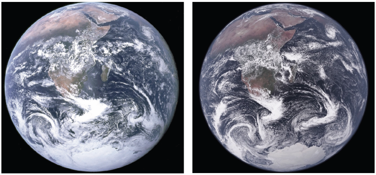

2025-10-11
Januar im Mittel 47 Mill. km² ~
(unterhalb von 2000m)

Was ist was?
Vorhersage:
Szenario
Klimaszenarien Strategisches Management
Szenario RCP8.5: (kontinuierlich steigende Treibhausgase in der Atmosphäre) 4-5 °C globale Erwärmung bis Ende 21. Jh.
michael.matiu@unitn.it
mitmat.eu
https://mitmat.github.io/slides/
Eurac Schnee Dossier, CliRSnow Projekt